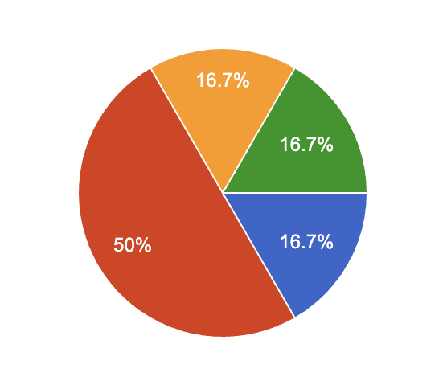
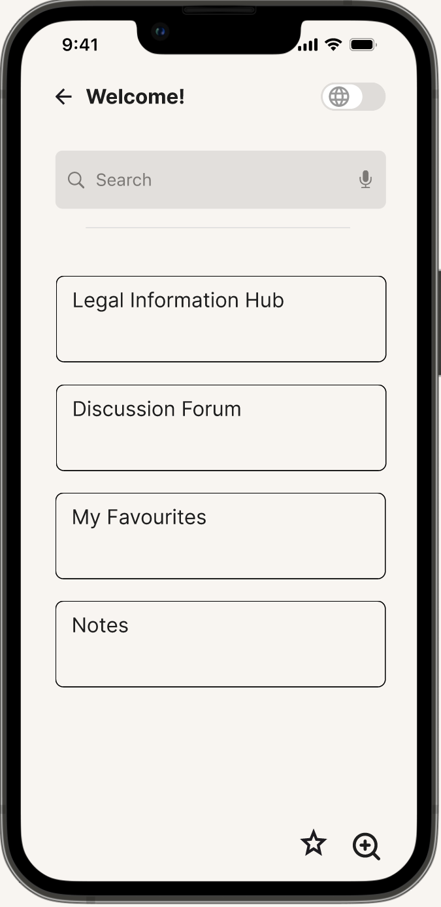
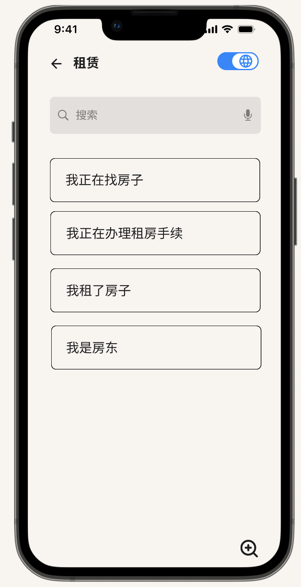
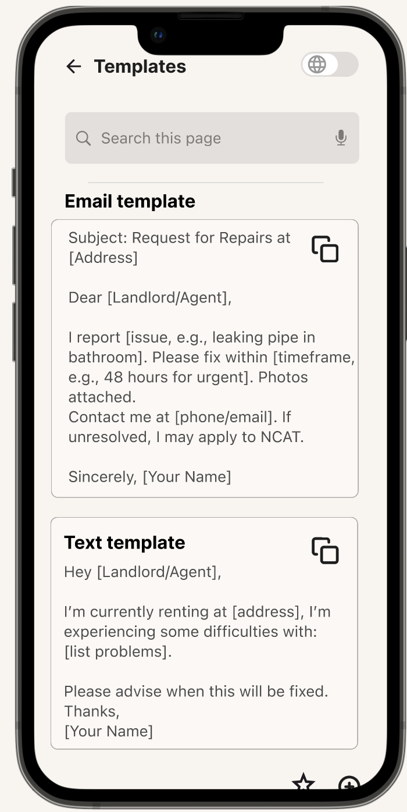
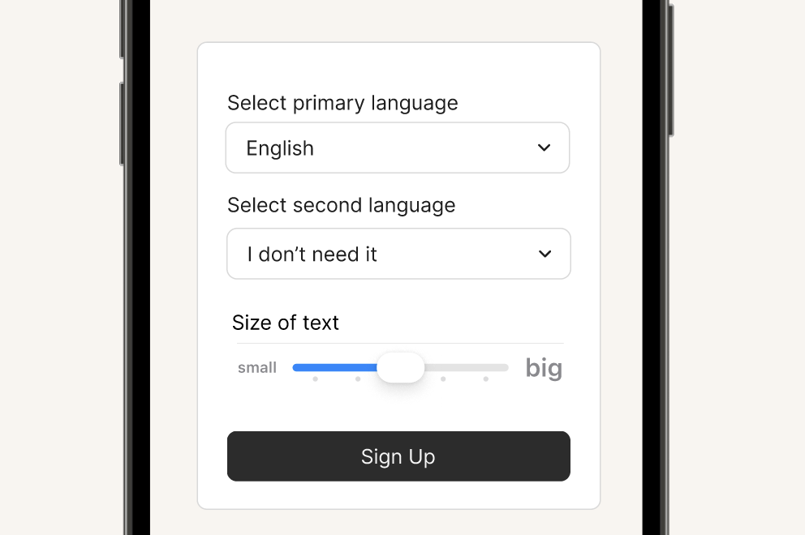

Findings Selection of common issues
Compartmentalise common issues and designed custom solutions for each.

Principle: User-Centered Task Flow & Hick’s Law
Sketched draft for each page, mermaid chart drawn to represent flow
Figma F
Progress is visualised via intuitive line graphs with color-coded trends (green = improvement). Interactive tooltips provide details on hover, enabling quick scanning without overwhelming the interface.

Translation: With the use of a switch button.

Templates Simple to use copy and paste templates

Able to consider Size of text, magnifing effects
Considering users with visual impairements